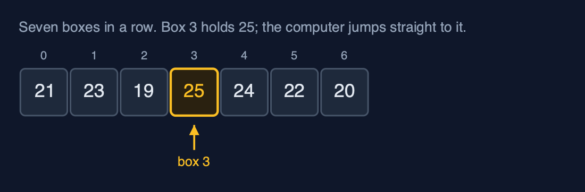
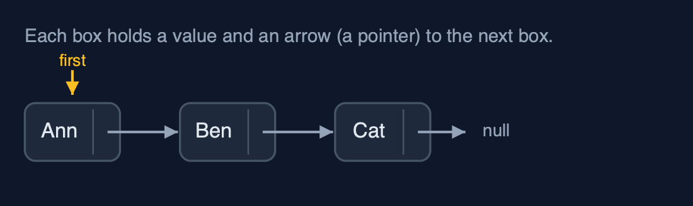
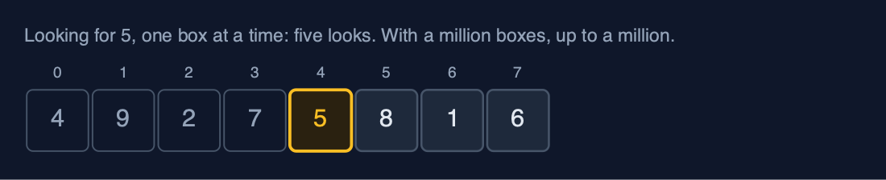
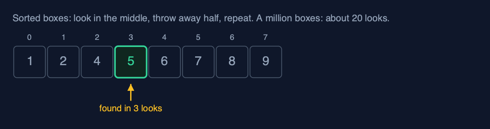

Start Here
Ten minutes before the first data structure. Everything in the course rests on the six ideas on this page, and each one is explained from nothing. The course is written in C, and you need only C basics: variables, loops, functions and structs.
1. What a data structure is
A data structure is a way of arranging data so that the jobs you do most often are quick.
Think of a kitchen. Cutlery goes in a drawer with a slot for each kind, so you can grab a spoon without looking. Spices go on a rack in alphabetical order, so you can find the cumin. Letters go on a spike, newest on top. Each is arranged for the job it is used for, and none of them is best at everything.
Data works the same way. The course is a tour of the arrangements people have found useful, what each is good at, and what each is bad at.
2. Memory is a row of numbered boxes
A computer's memory is a very long row of boxes, and every box has a number, called its address or index. Putting values next to each other in boxes numbered 0, 1, 2 and so on is called an array.

The important thing: if you know a box's number, the computer goes straight to it. Box 3 takes one step to reach, and so does box 3,000,000. That one fact explains why arrays are fast to read.
3. A pointer is an address, drawn as an arrow
Sometimes the next value is not in the next box. Instead, a box holds its value and the address of where to go next. A variable that holds an address is a pointer: in C, int *p holds the address of an int, &x is the address of x, and *p is the value at the address in p. In the pictures, a pointer is drawn as an arrow. NULL means the arrow points nowhere: this is the end.

Arrows make it cheap to insert something in the middle (change two arrows, move nothing) and slow to find the tenth item (follow ten arrows). Many data structures in the course are arrays, arrows, or a clever mix of both.
4. Taking memory and giving it back
An array written as int arr[10] has a size fixed when the program is written. Structures that grow ask for memory while the program runs: malloc(n) returns the address of n fresh bytes (or NULL if there are none), realloc makes a block bigger, and free gives a block back. In C nobody frees memory for you, so every project frees everything it takes, and warns about the three classic mistakes: forgetting to free (a memory leak), using memory after freeing it, and reading past the end of a block.
5. Counting steps
We compare data structures by counting steps: one look at, or one change to, one box. A stopwatch would tell you about your computer; counting steps tells you about the idea, and it is the same on every machine.
Looking for a number in unsorted boxes means checking them one at a time:

If the boxes are sorted, you can look in the middle, throw away the half that cannot contain it, and repeat:

Every project prints the steps it takes, so you can check the counts yourself.
6. Names for how the steps grow
What matters most is how the number of steps grows when the data grows. Only after counting do we give that growth a short name, written with a big O and the letter n for the number of items:
| Name | Said as | Steps for 10 items | For 1,000 | For 1,000,000 | Everyday example |
|---|---|---|---|---|---|
| O(1) | constant | 1 | 1 | 1 | Opening box number 3 |
| O(log n) | logarithmic | about 3 | about 10 | about 20 | Halving a sorted row |
| O(n) | linear | 10 | 1,000 | 1,000,000 | Checking every box once |
| O(n log n) | n log n | about 33 | about 10,000 | about 20,000,000 | Sorting well |
| O(n²) | quadratic | 100 | 1,000,000 | 1,000,000,000,000 | Comparing every box with every other |
You never need the formulas. The table is enough: each row is dramatically worse than the one above it once the data is large.
How each project is laid out
Every data structure is its own folder, and every folder has the same parts:
| Where | What |
|---|---|
README.md | The picture, the everyday idea, new words, the operations and their costs, common mistakes, and exercises |
docs/<name>-explained.md | Every act of the demo, picture by picture |
docs/animation.html | Open it in a browser: the structure changes on screen, step by step, with narration |
docs/cheat-sheet.md | The whole structure on one page |
docs/exercises.md | Practice, with the answers kept below |
src/ | The structure, written from scratch in C, and the demo |
tests/ | The tests, on a small harness written in the project |
To run a project's demo and its tests, from its folder:
make run
make testYou need only a C compiler and make (on macOS, xcode-select --install; on Linux, build-essential or gcc make). No libraries are used.
Colours in the pictures
Every picture in the course uses the same colours:
| Colour | Means |
|---|---|
| Amber | Just changed, or being looked at now |
| Green | Correct, or found |
| Red | Wrong, removed, or a problem |
| Purple | New |
| Faded, dashed | Empty or not in use |
In the animations you can switch between Light, Dim and Dark, step backwards and forwards, jump to any step, and turn on Predict first, which asks you to guess the next picture before it appears. Guessing first is the fastest way to learn.
Now open the course index and start with the first data structure.